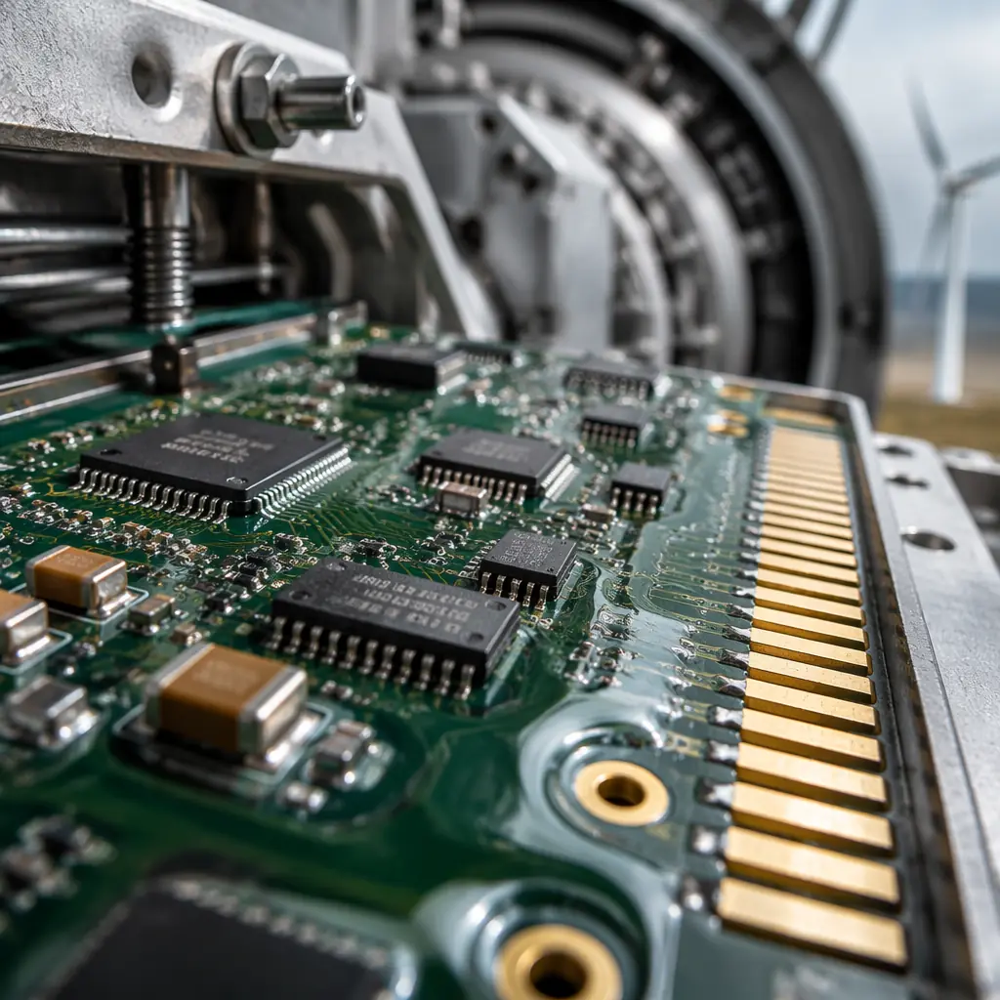
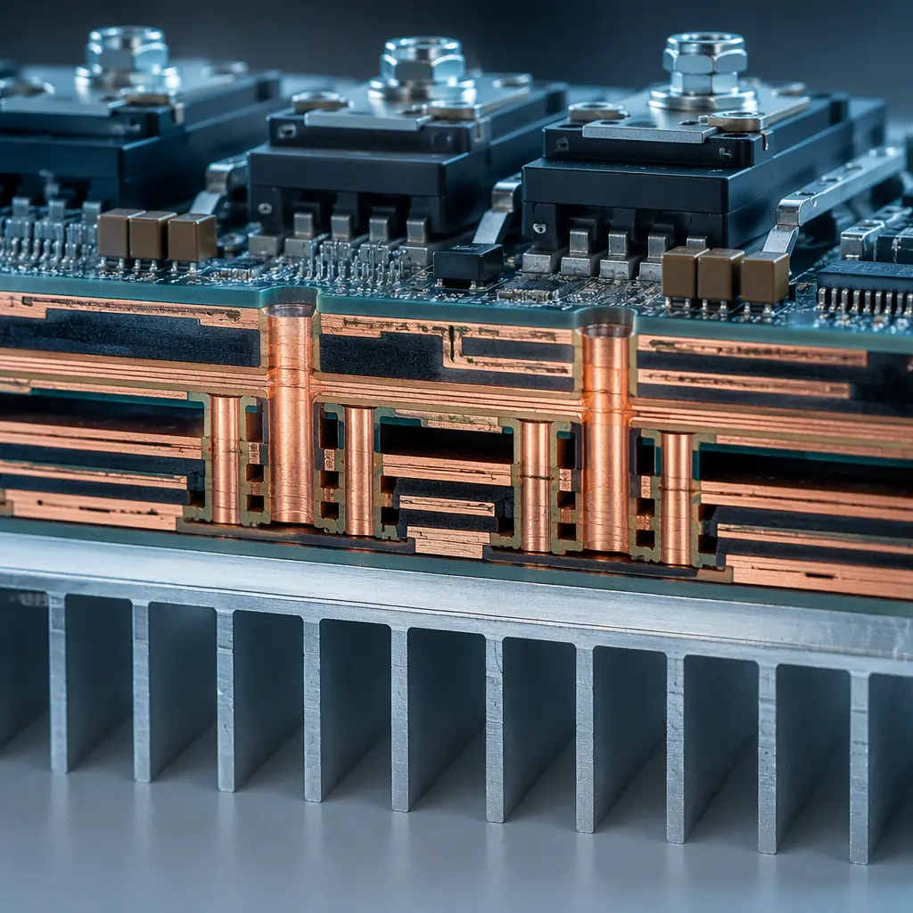
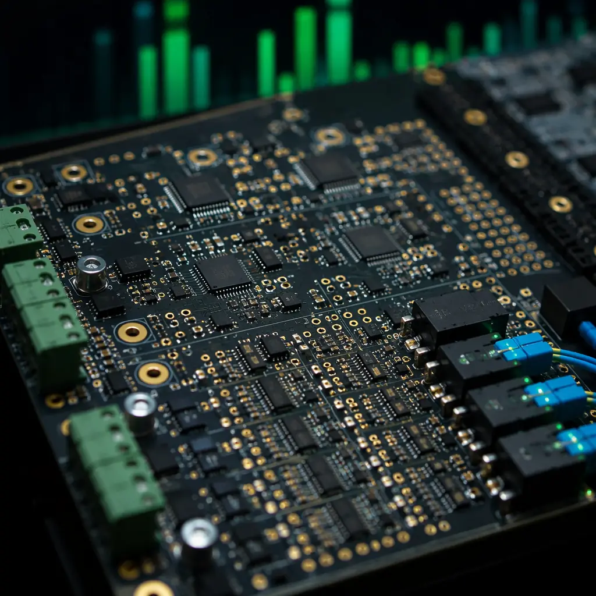
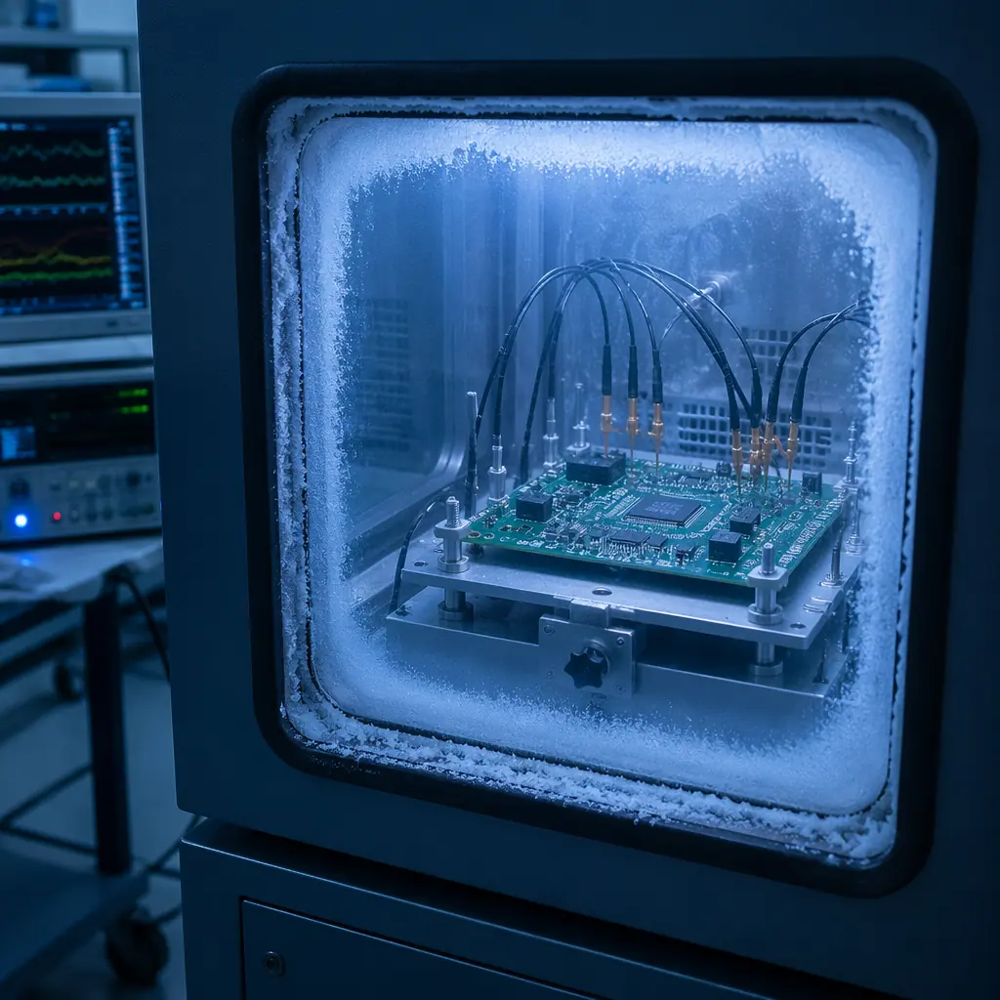

A single modern wind turbine contains 15-30 distinct printed circuit boards distributed across three critical subsystems: the pitch control unit inside each rotating blade hub, the condition monitoring and SCADA interface cabinet in the nacelle, and the power converter that conditions variable-frequency generator output for grid synchronization. Each of these PCBs operates in an environment that would destroy a standard commercial-grade board within 18 months — ambient temperature swings from -40°C to +85°C, 95% relative humidity in offshore installations, salt mist exposure that corrodes unprotected copper in weeks, and lightning-induced voltage transients exceeding 10 kV. The global wind turbine PCB market is projected to exceed $1.2 billion by 2028, driven by larger turbine ratings (8-15 MW) and the shift to offshore installations where maintenance access costs $5,000-15,000 per service call.
Huaxing PCBA manufactures wind turbine control PCBs under ISO 9001 and IATF 16949 certified quality management, with in-house capabilities spanning 2-32 layers, 0.5-6 oz heavy copper, 3/3 mil trace/space, ENIG surface finish, and conformal coating application. Our 8 SMT lines process 8 million solder joints per day, supporting the production volumes that wind turbine OEMs and their Tier-1 control system suppliers require. This guide covers the PCB design and procurement decisions that separate boards that survive a 20-year turbine service life from those that fail at the first lightning storm.

Why Wind Turbine PCBs Demand Different Design Rules
A PCB inside a wind turbine nacelle or rotating hub faces a combination of environmental stresses that no other industrial application combines simultaneously. Procurement managers who apply standard industrial PCB specifications to wind turbine applications discover the gap during the first winter storm or lightning strike.
Temperature Cycling: -40°C to +85°C, 365 Days Per Year
Unlike factory-floor industrial electronics that operate in climate-controlled cabinets, wind turbine electronics experience the full outdoor temperature range — from -40°C winter nights in Inner Mongolia to +85°C inside a nacelle under full sun in Rajasthan. Over a 20-year design life, the PCB undergoes approximately 7,300 diurnal thermal cycles, plus additional cycles from load-driven self-heating of power electronics. Standard FR-4 with Tg 130-140°C delaminates after 500-800 cycles at these extremes. Wind turbine PCBs require high-Tg laminates (minimum Tg 170°C) and z-axis CTE below 3.0% (50-260°C) to prevent barrel cracking in plated through-holes.
Vibration: Constant Low-Frequency + Gust-Induced Transients
A 5 MW turbine rotor spins at 8-15 RPM, producing steady low-frequency vibration. Gusts superimpose broadband vibration from 5 Hz to 2 kHz with acceleration amplitudes up to 5G on nacelle-mounted electronics. Pitch control boards inside the rotating hub experience centrifugal loading plus vibration — components and connectors must withstand 10-15G continuous acceleration. This demands reinforced mounting for heavy components (transformers, inductors, electrolytic capacitors), strain-relief on wire-to-board connectors, and underfill for BGA packages above 15 mm body size. See our BGA assembly guide for underfill selection criteria in high-vibration environments.
Salt Mist & Humidity: Offshore Turbines Are Marine Environments
Offshore wind turbines operate in the same corrosive environment as ships — salt-laden air with 85-95% relative humidity year-round. Unprotected copper traces develop conductive corrosion products within 6-12 weeks. The PCB requires conformal coating (acrylic, silicone, or parylene) at 50-100 μm thickness on both sides, with particular attention to coating coverage on sharp edges (component leads, test points, connector pins) where coating thins due to surface tension. For offshore applications, we recommend acrylic coating for reworkability or parylene for maximum protection — see our PCB conformal coating guide for the full material selection matrix.
Lightning Surge Protection: Direct Strikes Are Routine
A wind turbine on a hilltop or offshore platform is effectively a lightning rod. Turbine blades incorporate lightning receptors that conduct strike current down to ground, but the 30-200 kA discharge induces voltage transients of 5-15 kV on any conductor within the nacelle through electromagnetic coupling. PCB-level protection requires gas discharge tubes (GDTs) at every external connector, transient voltage suppression (TVS) diodes on every I/O line, and spark gaps on the PCB itself at 2-4 mm spacing between signal traces and chassis ground pours. The PCB layout must route surge current paths away from sensitive analog sections — a mistake we see in 30-40% of first-revision turbine PCB designs submitted for DFM review.
Procurement Insight: When sourcing wind turbine PCBs, insist that your supplier demonstrates experience with the IEC 61400 series — specifically IEC 61400-2-4 (environmental conditions) and IEC 61400-4-5 (lightning protection). A general-purpose PCB fabricator quoting "IPC Class 3" without wind-specific environmental qualification data is unlikely to deliver boards that survive the first offshore winter. Ask for thermal cycling test reports at -40°C to +125°C with a minimum of 500 cycles on a comparable laminate stackup.
Pitch Control System PCBs: Precision Under Extreme Conditions
The pitch control system is the most PCB-intensive subsystem in a wind turbine — each of the three blades contains an independent pitch control unit with 3-5 PCBs controlling a 5-15 kW servo motor or hydraulic actuator that rotates the blade to optimize its angle of attack. These boards operate inside the rotating hub, exposed to centrifugal force, vibration, and temperature swings that exceed those in the stationary nacelle.
IPC Class 3: Non-Negotiable for Rotating Hub Electronics
Pitch control PCB failure can cause a blade to lock at the wrong angle — resulting in either lost power generation or, worse, uncontrolled rotor overspeed. Every pitch control board must be manufactured to IPC Class 3 acceptance criteria: minimum 25 μm copper plating in via barrels, 0.025 mm annular ring minimum, and 20% minimum hole fill for PTH solder joints. The cost adder for Class 3 vs. Class 2 is approximately 15-25% — and it is the cheapest insurance a turbine OEM can buy against catastrophic blade failure. At Huaxing PCBA, we run 100% AOI and 4-wire Kelvin electrical test on every Class 3 board, with automated optical inspection catching defects that flying probe alone would miss on dense mixed-signal layouts.
Conformal Coating: The First Line of Defense
Pitch control boards inside the hub are exposed to condensation as the hub cools overnight after a warm day — water droplets form on cold PCB surfaces and bridge adjacent traces if the board is uncoated. Silicone conformal coating at 75-150 μm provides the best moisture resistance for rotating applications, maintaining dielectric strength above 1 kV/mil even after 1,000 hours at 85°C/85% RH. Acrylic coatings are easier to rework but soften above 80°C — a problem in hub environments that can reach 85°C ambient. Parylene provides the ultimate protection but adds $15-25 per board and requires CVD application equipment that few PCB assembly houses maintain in-house. For the cost-performance trade-off analysis, refer to our conformal coating selection guide.
Heavy Copper for Motor Drive Currents
The pitch motor drive stage switches 20-60A at 48-400V DC depending on turbine size. PCB traces carrying these currents require 2-4 oz copper on outer layers — standard 1 oz copper would require trace widths exceeding 25 mm for 60A at a 20°C temperature rise, consuming board real estate that compact hub enclosures cannot spare. Heavy copper inner layers (4 oz) for the DC bus plane reduce voltage drop and provide lateral heat spreading to the board edge. Our heavy copper PCB capability spans 0.5-6 oz — for high-current design rules including IPC-2152-based trace width calculation, see our heavy copper PCB manufacturing guide.

Condition Monitoring & SCADA Interface Boards
The condition monitoring system (CMS) is the wind turbine's nervous system — it continuously measures vibration spectra from accelerometers on the main bearing, gearbox, and generator, processes temperature data from 20-50 RTD sensors distributed throughout the drivetrain, and transmits the aggregated data to the SCADA system via fiber optic or industrial Ethernet. The CMS PCB is fundamentally a mixed-signal design where microvolt-level sensor signals share a board with digital processors and communication transceivers.
Sensor Signal Integrity Over Long Cable Runs
Accelerometers mounted on the gearbox send ±5V analog signals over 10-30 meter shielded cables to the CMS board in the nacelle cabinet. These cables act as antennas — they pick up electromagnetic interference from the generator, power converter switching at 2-20 kHz, and nearby lightning strikes. The CMS PCB front-end must include differential input amplifiers with common-mode rejection ratio (CMRR) above 100 dB at 50/60 Hz, input filtering with a 10 kHz low-pass cutoff to reject switching noise, and transient voltage suppression on every analog input channel. The PCB layout requires guard traces around high-impedance analog nodes and a solid ground plane under the entire analog front-end — no digital traces crossing the analog ground pour. For mixed-signal PCB layout methodology, see our mixed-signal PCB design guide.
Mixed-Signal Partitioning: Analog, Digital, and Power Isolation
A typical CMS board carries a 24-bit sigma-delta ADC sampling 16 channels at 25.6 kHz for vibration FFT analysis alongside an ARM Cortex processor running a Linux RTOS, gigabit Ethernet PHY, and isolated CAN/RS-485 transceivers for nacelle-internal communication. This is three distinct signal domains — precision analog, high-speed digital, and isolated fieldbus — on a single 6-8 layer board. The ground plane must be split between analog and digital sections with a single-point connection at the ADC, all high-speed digital traces routed on layers adjacent to the digital ground plane, and the isolated fieldbus section separated by 8 mm creepage distance (reinforced isolation for 400V working voltage per IEC 60664-1).
Industrial Ethernet and Fiber Optic Interfaces
Nacelle-to-tower-base communication runs over fiber optic (100Base-FX or 1000Base-SX) for immunity to lightning-induced EMI — copper Ethernet within the nacelle is vulnerable to ground potential rise during a strike. The CMS board's fiber optic transceiver requires controlled-impedance differential pairs at 100Ω ±10% for the electrical interface to the SFF module, with impedance controlled across the full temperature range. At Huaxing PCBA, we validate controlled impedance on every production panel using TDR (Time Domain Reflectometry) with ±5% tolerance, and provide impedance test coupons with every shipment for customer incoming inspection.
Key Design Decision: Vibration analysis for predictive maintenance requires frequency-domain data up to 10 kHz (bearing fault frequencies). The CMS PCB's anti-aliasing filter must provide at least 80 dB attenuation at the Nyquist frequency to avoid false fault indications. Underspecifying the filter — or routing noisy digital traces near the filter section — creates phantom vibration peaks that trigger unnecessary maintenance dispatches costing $3,000-8,000 per offshore service call.

Power Converter & IGBT Driver PCBs
The power converter is the largest and most expensive PCB assembly in a wind turbine — a 2 MW full-power converter contains 8-12 IGBT modules switching 1,000-1,700V DC bus at 2-5 kHz, with gate driver boards that must deliver ±15V gate pulses with <50 ns rise time across a 10 kV/μs common-mode transient environment. These are among the most demanding power PCB designs in any industry — combining heavy copper, high voltage, and extreme thermal cycling on a single board.
Heavy Copper: 4-6 oz for the DC Bus and Phase Outputs
A 2 MW converter operating at 690V AC output carries phase currents of approximately 1,675A RMS. Even after splitting across parallel IGBT modules, individual PCB traces on the gate driver and snubber boards carry 50-200A pulses. These traces require 4-6 oz copper on outer layers and 3-4 oz on inner layers — standard 1-2 oz copper would require trace widths exceeding the board dimensions. Heavy copper lamination requires vacuum presses with extended cycle times (typically 2-3 hours vs. 45 minutes for standard 1 oz) and precise resin flow control to fill the 140-210 μm gaps between thick copper features. At Huaxing PCBA, our heavy copper capability spans 0.5-6 oz with documented lamination profiles for every copper weight and layer count combination. For design rules and thermal derating curves, see our heavy copper PCB guide.
Thermal Management: 200W+ Dissipation on a Single Board
The gate driver board sits adjacent to IGBT modules that dissipate 1-3 kW each — even with forced air or liquid cooling, the PCB ambient temperature reaches 70-85°C. Gate driver ICs and isolated DC-DC converters on the board add 10-25W of local dissipation. Effective thermal management requires thermal via arrays (0.3mm drill, 0.6mm pitch, 25-49 vias per power device) connecting the component thermal pad to a bottom-side copper plane bonded to a heatsink with thermal interface material. Ceramic substrates (Al₂O₃ or AlN) provide 20-170 W/m·K thermal conductivity — 50-500× better than FR-4 — and are used for the IGBT gate driver stage in high-power converters where FR-4 thermal resistance would cause excessive junction temperatures. For thermal via design methodology and substrate selection criteria, see our PCB thermal management guide.
High-Voltage Isolation: 1700V DC Bus to Gate Drive Logic
The IGBT gate driver must provide galvanic isolation between the 1700V DC bus (referenced to the IGBT emitter) and the 3.3V/5V control logic (referenced to chassis ground). This requires 14 mm creepage distance (reinforced isolation, Pollution Degree 2, Material Group IIIa per IEC 60664-1) — typically achieved with a combination of PCB slot cuts (2mm minimum width), isolated DC-DC converter modules with 8 mm creepage, and digital isolators with internal isolation barriers. The PCB slot cut is the most cost-effective way to increase creepage without increasing board size — a single 2mm slot adds 4mm of effective creepage (2mm down + 2mm up). At Huaxing PCBA, our CNC routing capability supports slot cuts as narrow as 1.6mm with ±0.1mm positional accuracy.
Material Selection for 20-Year Service Life
The laminate under your copper traces is the most consequential material decision in wind turbine PCB procurement. A laminate that saves $3-5 per board at sourcing will cost $15,000 in offshore crane mobilization when the board fails at year 8. Here is how the material options compare for wind turbine applications:
| Material | Tg (°C) | CTE Z-Axis (%) | Td (°C) | Best For |
|---|---|---|---|---|
| Standard FR-4 | 130-140 | 4.0-5.0 | 310 | Not recommended — fails thermal cycling within 2-3 years |
| High-Tg FR-4 (Shengyi S1000-2, ITEQ IT-180A, Isola 370HR) | 170-180 | 2.5-3.0 | 340-350 | CMS/SCADA boards, pitch control logic boards, general nacelle electronics |
| Polyimide (Arlon 85N, Isola P95) | 250+ | 1.5-2.0 | 390 | IGBT gate driver boards, power converter snubber boards, >12-layer heavy copper builds |
| Ceramic (Al₂O₃ 96%) | N/A | 6.5-7.0 ppm/°C | >1000 | IGBT driver output stages, direct die-attach SiC MOSFET modules |
| Ceramic (AlN) | N/A | 4.5 ppm/°C | >1000 | Highest thermal performance (170 W/m·K), direct-bonded copper (DBC) substrates for >200°C operation |
CTE Matching Matters More Than Tg Alone: A laminate with Tg 180°C but CTE z-axis expansion of 4.0% above Tg will still crack via barrels after 1,000-1,500 thermal cycles because the copper plating (CTE 17 ppm/°C) and laminate expand at dramatically different rates above Tg. Specify both Tg ≥ 170°C and z-axis CTE (50-260°C) ≤ 3.0% in your procurement specification. For a detailed comparison of laminate families across all property dimensions, see our PCB materials selection guide.
Testing Beyond IPC: What Wind Turbine Manufacturers Actually Require
IPC-6012 Class 3 is the starting point — not the finish line — for wind turbine PCB qualification. Turbine OEMs and their Tier-1 control system suppliers impose additional test requirements that reflect the real-world failure modes observed in the field. Procurement managers should understand which tests add value and which are redundant.
Thermal Cycling: 1,000+ Cycles, Not 100
IPC-TM-650 method 2.6.7.1 specifies 100 cycles from -65°C to +125°C for thermal shock testing. Wind turbine OEMs typically require 1,000-2,000 cycles from -40°C to +125°C with 15-minute dwell times and <15-second transition — this is closer to MIL-STD-810 than IPC, and reflects the 7,300 diurnal cycles over 20 years of field life. The board must show <10% increase in via resistance (measured by 4-wire Kelvin) after cycling, with no evidence of barrel cracking, inner-layer separation, or pad lifting in microsection analysis. At Huaxing PCBA, we maintain an in-house thermal cycling chamber capable of -70°C to +180°C with 10-second transition time, and we recommend thermal cycling qualification on first-article boards for every new laminate stackup.
HALT (Highly Accelerated Life Testing)
HALT subjects the assembled PCB to combined thermal and vibration stress well beyond specification limits to identify weak points before they become field failures. A typical wind turbine HALT profile applies -100°C to +170°C thermal ramps at 60°C/min while simultaneously vibrating the board at 5-50 Grms across 10 Hz to 10 kHz. HALT does not simulate field conditions — it accelerates failure mechanisms so they appear in hours rather than years. The value of HALT for procurement is that it identifies design margin gaps (e.g., a connector that fails at 45 Grms when the specification only requires 15 Grms) before the design is frozen, when fixing the issue costs $500 rather than $50,000 in field retrofit costs.
Salt Spray (ASTM B117) and 85/85 THB Testing
Offshore turbine PCBs must pass 96-500 hours of salt spray testing per ASTM B117 with no visible corrosion on exposed copper (test points, connector pins, component leads). The 85/85 THB (Temperature Humidity Bias) test — 1,000 hours at 85°C/85% RH with DC bias applied between adjacent conductors — verifies that conformal coating prevents electrochemical migration and conductive anodic filament (CAF) formation. Boards that pass 85/85 testing without conformal coating degradation can be confidently deployed in offshore nacelles where humidity condenses on cold PCB surfaces overnight. For ionic contamination limits, ROSE testing per IPC-TM-650 2.3.25 should show <1.56 μg/cm² NaCl equivalent on bare boards before assembly.

Partial Discharge Testing for >1000V Boards
IGBT driver boards operating on a 1700V DC bus require partial discharge (PD) testing per IEC 60664-4. Voids in the PCB laminate — microscopic air pockets between glass fibers and resin — ionize at high voltage and slowly erode the surrounding material, creating a conductive carbon track that eventually causes dielectric breakdown. PD inception voltage must exceed 1.875 × peak operating voltage. This is achieved through vacuum lamination (minimizing void formation during pressing) and PD testing at 1.5× rated voltage on 100% of production boards for >1000V applications. General-purpose PCB fabricators rarely have vacuum lamination or PD test capability in-house — verify this explicitly during supplier qualification.
Test Specification Checklist: When requesting wind turbine PCB quotes, include the following test requirements explicitly in your RFQ: (1) Thermal cycling: 1,000 cycles -40°C to +125°C per IPC-TM-650 2.6.7.1, (2) IST (Interconnect Stress Testing) per IPC-TM-650 2.6.26, (3) Salt spray per ASTM B117 — specify duration (96h minimum, 500h for offshore), (4) 85/85 THB 1,000h per IPC-TM-650 2.6.14.1, (5) ROSE cleanliness <1.56 μg/cm² per IPC-TM-650 2.3.25, and (6) Partial discharge testing per IEC 60664-4 for boards operating above 1000V. If a supplier cannot demonstrate in-house capability for items 1-3, their quote should be disqualified regardless of price.
How to Specify Wind Turbine PCBs in Your RFQ
The difference between a PCB that survives 20 years on an offshore wind turbine and one that fails at year 5 is almost entirely determined by what you put in the RFQ. Here is a procurement checklist that captures the requirements wind turbine OEMs and Tier-1 control system suppliers actually need — organized by the decisions a PCB fabricator makes during quoting and production.
Laminate Specification — Be Specific, Not Generic
Do not write "high-Tg FR-4." Write the exact laminate brand and grade: "Shengyi S1000-2 (Tg 180°C), ITEQ IT-180A (Tg 180°C), or Isola 370HR (Tg 180°C). Z-axis CTE (50-260°C) ≤ 3.0%. Td (5% weight loss) ≥ 340°C. Certificate of Conformance required for every laminate lot with Tg verified by DSC." A generic "high-Tg" specification allows the supplier to use any laminate with Tg ≥ 150°C — including tier-3 Chinese laminates that degrade to Tg < 150°C after 500 thermal cycles due to incomplete cure. For the full laminate comparison across all material families and applications, see our PCB materials selection guide.
Copper Weight — Layer by Layer
Specify copper weight separately for each layer, not a blanket "2 oz." Example: "Layer 1 (top): 4 oz, Layer 2 (inner GND): 2 oz, Layer 3 (inner DC bus): 5 oz, Layer 4 (bottom): 4 oz." This prevents the supplier from applying a uniform copper weight that is insufficient on high-current layers and wasteful on low-current layers. Our capability spans 0.5-6 oz with documented etched trace width vs. current capacity tables for every copper weight — see our heavy copper PCB guide for the data.
Surface Finish — Match to Environment
ENIG (Electroless Nickel Immersion Gold) is the default for wind turbine PCBs because it provides a flat soldering surface (critical for fine-pitch QFP and BGA components) and resists oxidation during extended storage between PCB fabrication and assembly. Specify 3-5 μm Ni / 0.05-0.125 μm Au per IPC-4552. Avoid HASL (Hot Air Solder Leveling) for turbine PCBs — the uneven surface creates coplanarity issues for fine-pitch components and the thermal shock of the HASL process can warp thin laminates. For offshore applications with extended salt-mist exposure, ENEPIG (Electroless Nickel Electroless Palladium Immersion Gold) provides superior corrosion resistance at 15-25% cost premium over ENIG.
Acceptance Criteria — IPC Class 3 With Wind-Specific Additions
Standard IPC-6012 Class 3 covers annular ring, plating thickness, and solder joint requirements. Add wind turbine-specific criteria: (a) No inner-layer separation after 6× solder float at 288°C per IPC-TM-650 2.6.8, (b) Minimum 25 μm copper in via barrel verified by microsection on test coupons from every production panel, (c) Conformal coating coverage ≥ 95% verified by UV inspection with 50-150 μm dry film thickness, (d) 100% 4-wire Kelvin electrical test on all traces carrying >10A. These additions typically increase PCB cost by 10-18% and are the cheapest field failure prevention investment available.
Supplier Qualification — Verify, Don't Trust
Require the PCB fabricator to provide: (a) Thermal cycling test report on a board with comparable stackup (same laminate, copper weight, layer count) showing ≥ 1,000 cycles with <10% via resistance change, (b) IST coupon data showing ≥ 100 cycles to failure at 150°C, (c) Photographs of in-house conformal coating application equipment (not outsourced), (d) Vacuum lamination press maintenance log for the past 12 months (for heavy copper and >12-layer boards). If the supplier hesitates on any of these four items, their production line is not wind turbine qualified regardless of what certifications they list.
RFQ Optimization Tip: Wind turbine PCB programs span multiple turbine models with different PCB requirements — a 2 MW onshore turbine uses different boards than an 8 MW offshore turbine. Bundle all turbine model PCBs into a single RFQ. The aggregate volume across models justifies the supplier's investment in dedicated tooling, laminate inventory, and test fixture NRE. A single-model RFQ at 200-500 units/year will receive 15-25% higher per-unit pricing than a multi-model RFQ at 2,000-5,000 units/year total — the same supplier, the same production line, but different volume economics. For volume aggregation and pricing strategies, see our PCB cost factors guide.
Wind Turbine PCB Manufacturing: Execution, Not Specification
The most thoroughly specified wind turbine PCB in the world will fail if the fabricator cannot execute. A laminate specification that demands Tg 180°C is worthless if the fabricator's lamination press hasn't been calibrated in 18 months and the actual press temperature is 15°C below setpoint. A conformal coating specification that demands 75 μm silicone is worthless if the coating technician applies it by hand without a thickness gauge.
At Huaxing PCBA, we manufacture wind turbine control PCBs with the same process discipline we apply to IATF 16949 automotive production — documented lamination profiles for every laminate lot, automated optical inspection on 100% of boards, 4-wire Kelvin electrical test on all power traces, and conformal coating application with in-line UV thickness verification. Our facility processes 8 million solder joints per day across 8 SMT lines, with in-house capability from 2-layer simple boards to 32-layer heavy copper builds with blind and buried vias. We maintain strategic inventory of high-Tg laminates (Shengyi S1000-2, ITEQ IT-180A, Isola 370HR) and polyimide materials to support the lead times that wind turbine production schedules demand.
For your next wind turbine PCB project — whether you're designing pitch control boards for a new 6 MW platform, upgrading CMS electronics for an existing fleet, or sourcing power converter gate driver PCBs for a full-power converter — our work in renewable energy power electronics demonstrates the manufacturing capability. Read our power electronics PCB design guide for application-specific design rules, or submit your Gerber files and stackup requirements for a free DFM review with thermal analysis and a production timeline within 24 hours.